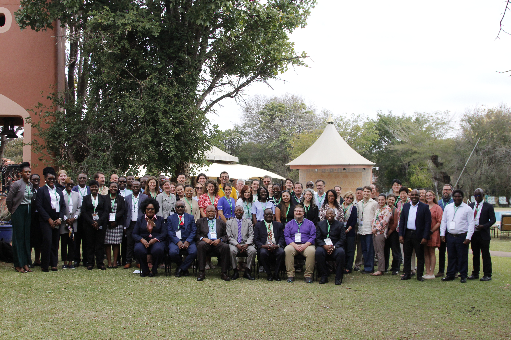
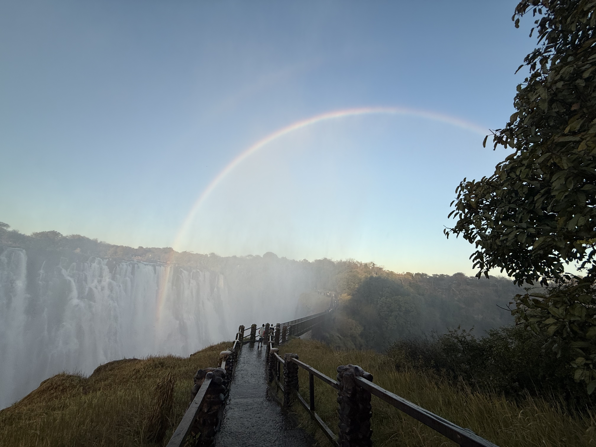
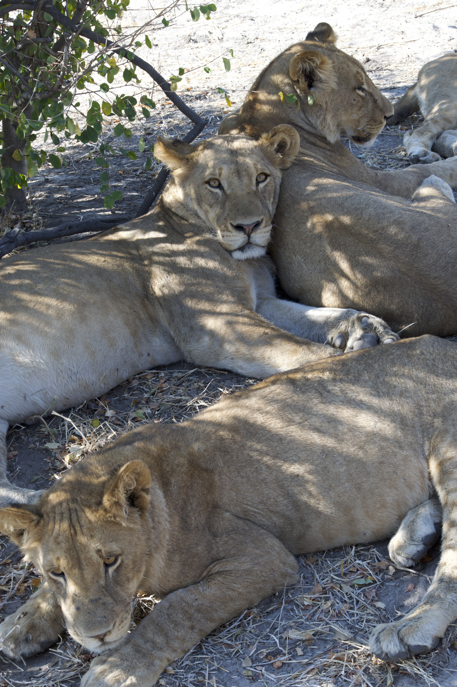
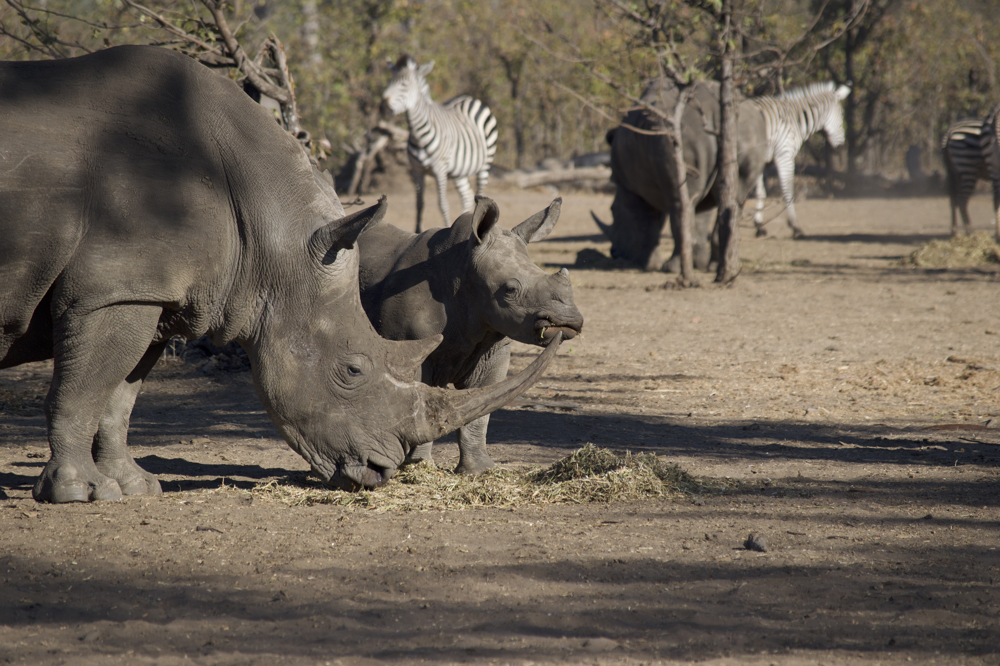
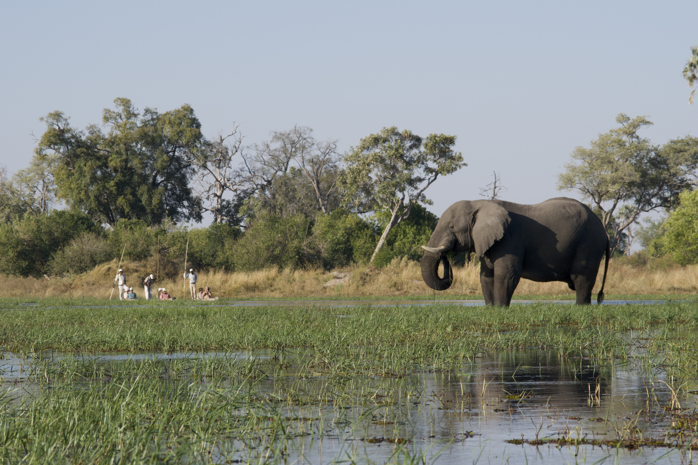
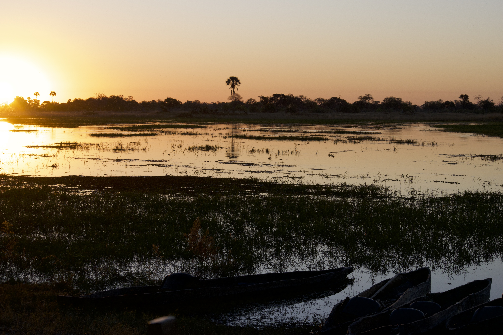

World Dendro 2025 in Livingstone, Zambia
The 11th World Dendro Conference 2025 was truly one to remember! It was both the first time that World Dendro (and myself) came to Africa, where we convened at the base of Victoria Falls in Livingstone, Zambia. I presented some of my research, co-led a workshop before the conference, and did not pass up the opportunity to go on some safari outings with the World Dendro participants.

World Dendro Workshop
Forest growth and carbon with uncertainty from tree-rings and census data
Dr. Andria Dawson and I arrived in Livingstone a day early to co-led a workshop titled “Forest growth and carbon with uncertainty from tree rings and census data”. In our research, we both have experience combining tree ring data and repeat forest census data within a state-space model to estimate (or forecast) interannual varaiblity in tree diameter over time, which can be scaled to tree and plot-level biomass and carbon. This approach is a type of data assimilation (or data fusion) provides estimates of biomass that reflect annually varying drivers (e.g., climate, disturbances), but are grounded in tree-level observations of diameter/biomass/carbon. Given the potential value of these estimates for forest carbon accounting, forest management, and quantifying climate risks, we wanted to provide background and accessible coding resources for other researchers interested in taking similar approaches.
One thing I learned from organizing a previous multi-day workshop on this topic was that wrestling with different versions of statistical software (I’m looking at you rstan…), and downloading materials can be a non-trivial barrier for learning. For the World Dendro workshop, I developed a “low to no-code” option for engaging in the tutorial: a workshop webpage (Tree Ring and Forest Census Workshop) that using quarto markdown and hosted on my personal github pages website. This webpage that has background information, code, and tutorial figures for each of the modules covered during the workshop, including: methods for back-calculating tree size and biomass using either a) only tree ring data, b) only census measurements, and c) combining tree-ring and census data. Workshop participants also had access to a Posit Cloud workspace to “get their feet wet” with the tutorial code (R, Rstudio, STAN) and try to apply this to their own data during the workshop without the hassle of downloading software, data, and code repositories on their local machines. Our goal was to reduce common barriers to learning, introduce several complex topics without overwhelming students (including biomass estimation, quantifying uncertainty, and Bayesian methods), and provide an long-term and accessible resourse. By creating an environment where participants could engage with the material at their own pace and style, this tutorial allowed us to all learn from one another; Seeing the approach in action sparked important questions and led to a lively discussion on common challenges that carbon accounting and inventory projects face across Africa.
Research Talk:
I gave a talk that demonstrates how I use tree ring and forest inventory data to improve estimates of inter-annual variability in tree growth, forest C storage, and forest productivity across the Northeastern United States. Historic investments made by the US Nationwide Forest Inventory Program (periodic forest inventories and 20,000 tree core samples collected in the late 1980s) create an immense opportunity to apply the data fusion approaches discussed in the workshop across scales. At the same time, the nature of these data can make it challenging (ensuring spatially distributed cores are reliably crossdated, accounting for variability in growth-climate responses across space and time, and missing metadata). Despite these challenges, development of climate-sensitive growth models for 20 common species in the Northeastern US provides the scaffolding for future work that validates these models with contemporary data and updates estimates using full data assimilation approaches. It was fun to meet and connect with many folks (from across the globe) who are also working on forest carbon estimation, dendroecology, and unique challenges to crossdating.

On safari:
After a week of science, the World Dendro participants embarked on conference offered safaris. The sunset river safari was an incredible way to see the Zambezi river, with lots of bird watching opportunities. We also took a morning game drive in Mosi-oa-Tunya National Park, where we were lucky to see a Nile monitor, elephants munching on their favorite tree snack (Mopone), and meet some heavily guarded white rhinos (with their babies). The next day, a few of us hopped over to neighboring Botswana for a morning cruise on the Chobe River, which was packed with lifer bird and mammal sightings. Our lunch plans were then delayed by a traffic jam on the river, when a bachelor group of elephants decided to swim across the river right in front of our boat! I would say it was very much worth the late meal. In the afternoon, we took a drive through Chobe National Park, which brought us through the upland landscape above the river, which was teeming with many animals during this time of year, the Chobe river remains one of the few reliable water sources during the dry season. Our guide pointed out a real-life “elephant graveyard” of large bones, where locals have spotted elephants returning to each year for a moment of quiet remembrance. The afternoon culminated in a truly terrific way, as we witnessed the tail end of a standoff of between a pride of lions and a heard of elephants.


After the conference ended, I had the incredible experience of spending a few nights at a camp in Okavango Delta. From the moment the bush plane wheels touched down on the dusty airstrip deep in the delta, I was immersed with a sense of how vast, special, and unique the Delta is, and how lucky I am to have experienced both the Delta and its inhabitants. Each day, I walked and paddled with my guide, attempting to learn the names of the birds, trees, how to identify different types of scat, animal tracks. Really, it was a dream come true for a curious ecologist, and truly restful for the soul to just *be* and experience the wonder of the world all around. That wonder was sometimes rather noisy and on the scary side, the elephants that decided to knock down some trees in camp on my last night, for one. My highlights in the Delta were tracking and seeing a pack of African wild dogs, spotting (or rather scaring) a pair of honey badgers, and bird watching from the mokone.

There is so much more I could say about the science and safaris, but the people are really what made this trip so special. Not only was it alot of fun to reunite with old friends and meet new colleagues, but I learned so much from the immersion in cultures different from my own; From my first experience eating N’shima, the cultural welcome dinner where we learned the unique history, shared a feast that included traditional and modern zambian cuisine, and learned the moves to dances from with each nearby village, it seemed like everyone was happy and proud to share their story. Throughout the whole trip, I was struck by how kind, open, welcoming, and laid-back people in Zambia and Botswana are, despite how serious they take their dancing!
I returned home as mentally refreshed and brimming with excitement about dendrochronology as I was jet-lagged, carrying with me the best souvenir of all, a renewed sense of hope for the world!
